| Stars | ||||
| 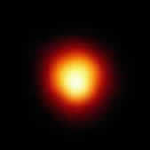 | 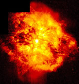 | 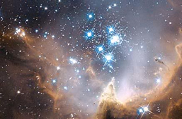 | 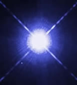 | 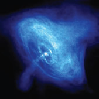 |
| How Stars Are Classified |
General Classification |
|
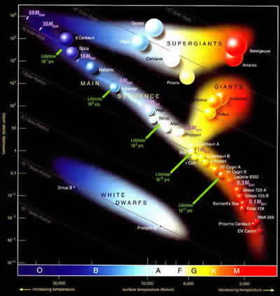 Here is a graph called a Hertzsprung-Russell Diagram showing the temperature vs. luminosity (brightness) of stars. It shows the band of Main Sequence stars from the small red to the large blue stars. The three groups show the giants, super giants and white dwarf stars. This graph tells you the relation of how bright a star is, how big a star is, how hot a star is and also can show how old a star is in relation from where the branch stems. |
|||||||||||||||||||||||||||||||||||||||||||||||
| Further Defined Classifications |
|
||||||||||||||||||||||||||||||||||||||||||||||||
| A Star's Life Cycle | |||||||||||||||||||||||||||||||||||||||||||||||||
| Star's Formation | 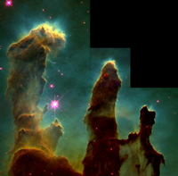 | 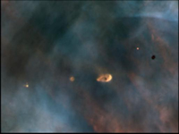 | 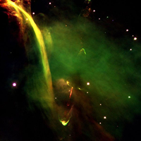 | ||||||||||||||||||||||||||||||||||||||||||||||
The Pillars of Creation is part of the Eagle Nebula. It is a giant cloud of gas currently forming stars. Depending on how much available gas there is and how much of this gas has coalesced will determine much of everything in the star's life. If only small amounts of gas are available, the star will live a small sized yet long life upwards of tens of billions of years. If the star collects much more gas, it will live as a huge blue star with a life span of only a several hundred million to a few billion years. |
The small polyps in this image taken from the Hubble Space Telescope show dense regions of gas and dust in the Orion Nebula which are currently housing newly forming stars. The left over gas and dust in these polyps may potentially form sets of new planets. |
This image shows the region around a new star barely given birth. The jets are formed by the strong solar winds which are being ejected from the newly formed star. This process occurs soon after star birth and remains active possibly for a million years. |
|||||||||||||||||||||||||||||||||||||||||||||||
| This computer animation shows one theoretical process to form stars using the gasses found in the Eagle and Orion Nebulae over the course of a few million years. |
|||||||||||||||||||||||||||||||||||||||||||||||||
| Star's Life | 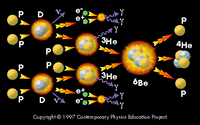 | 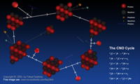 | 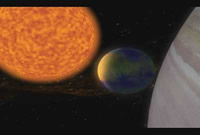 | ||||||||||||||||||||||||||||||||||||||||||||||
All stars burn through material throughout their life. They do things much like that of our own sun. These internal and surface activities are further explained in the "Our Sun" section found on the home page. When stars are new to middle aged such as our own, the core fuses hydrogen through a process called the Proton-proton chain reaction. This process takes place in low to stellar mass stars. This occurs when two protons colliding with enough energy to fuse together. Once fused, this creates a Deuteron (hydrogen atom comprised of a proton and a neutron) and releases a neutrino as well as an electron and positron which in turn create a pair of gamma rays. Once more, the Deuteron collides with another proton creating a ionized Helieum-3 atom (a helium atom with one neutron and 2 protons) and releases another gamma ray. When these two Helium atoms collide and fuse, you can obtain Berryllium-6 which in turn decays to two protons and a Helium atom. |
In stars larger than our sun, the dominant fusion process in the core is called the Carbon-Nitrogen-Oxygen Cycle (CNO Cycle). This process uses existing, small amounts of heavier elements as a catalyst for the fusion of hydrogen. The process begins by the capture of a proton by a Carbon-12 atom which emits a gamma ray creating a Nitrogen-13 atom. The N-13 atom Beta decays (release of an electron or positron) into a C-13 atom. The C-13 atom captures a proton and emits a gamma ray creating a N-14 atom. The N-14 atom captures another proton forming an Oxygen-15 atom which Beta decays into a N-15 atom. The N-15 atom Alpha decays (release of a helium nucleus) and forms C-12 once again. This cycles over and over again until the core mass dwindles enough to create stop the fusion process. |
For stars the size of our sun, they begin to burn helium in its core when they run out of hydrogen. They start to fuse helium to produce Carbon, Nitrogen and Oxygen. This will cause the star to expand due to the increase in the energy output, decrease in core size, and burning of hydrogen and helium shells around the core. The star will continue to expand to between 200-800 times the radius of our sun to become a red giant. Stars larger than our sun will increase in size to form a Red Supergiant star. It will expand to about 1500 times the radius of our sun. Both red giants and red supergiants decrease in surface temperature down to around 3500 Kelvin. This is due to the energy being spread over a much larger surface area. Stars smaller than our sun will not become red giants. |
|||||||||||||||||||||||||||||||||||||||||||||||
| Star's Death | 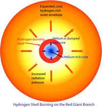 | 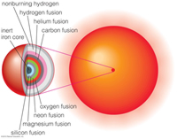 | |||||||||||||||||||||||||||||||||||||||||||||||
| Solar Mass Stars:
Since stars do have a finite amount of material to fuse, there is a limit to how long they live. As the star burns through its hydrogen, it begins to fuse helium in the core (a fast process called the Helium Flash) and shells of hydrogen outside of the core. At this point, the star inflates and becomes a giant or supergiant depending on size. As the star continues burning through Helium, Beryllium, Carbon and Oxygen, the core contracts and expands through each of the fusion processes. Only stars more massive than our Sun (approx. 8x our sun's mass) can fuse elements higher than Helium. As the Star burns through more Helium, it expands into an Asymptotic Giant Branch (AGB) star and begins to vary its size and brightness as different shells of hydrogen and helium are burned and helium flashes occur. The core of the star is becoming more unstable as time goes on. Interestingly, the Helium burning shells in the star can begin synthesizing heavier elements due to neutron capture and beta decay to produce elements as large as Bismuth-83. Also, Carbon and Oxygen are transported from inside the star to the outer atmosphere due to powerful convection currents. |
High Mass Stars:
Stars with greater mass than our Sun (greater then 5 solar masses) begin by burning helium in the core much like a solar mass star but since there is more mass, there is more gravitational energy to further the process through Iron. As Helium runs out in the core, it collapses until the outward pressure of the fusion of Carbon can withstand the inward force of gravity. Then the star's core collapses more and more as the heavier elements are fused. More energy (provided by the force of gravity on the core) is needed to burn heavier and heavier elements until Iron is reached. At this point, there is not enough energy to fuse Iron. Massive stars such as these have life spans of millions to just a couple billion years unlike that of solar mass and smaller stars which have life spans of tens of billions of years. |
The Final Death:
For solar mass stars, the core will produce a number of helium flashes as it fuses through its remaining fuel. At some point, these helium flashes increase in intensity and will push off the outer layers of the star's atmosphere into space creating a "Planetary Nebula". This name is a misnomer due to astronomers thinking these were distant planets before they were found to be nebula created by dying stars. There is nothing left over except for the dense hot core of the star that has ceased its fusion processes. This leftover core is called a White Dwarf. As the large mass star fuses through the slew of elements ending at Iron, the core runs out of energy due to Iron needing energy to fuse it instead of being able to release energy when fused. When the core stops fusing at Iron, it collapses due to the loss of outward pressure and becomes overwhelmed with the inward force of gravity. The very fast collapse of the core causes the outer layers to collapse also, but these outer layers hit the core of the star and bounce off with immense force. Energy is release in the form of neutrinos, light, and heat as the outer layers of the star are blown outward from the core. Depending on the size of the initial star and how much material was left over, the core collapses into a Neutron Star or a Black Hole. |
|||||||||||||||||||||||||||||||||||||||||||||||
| After Life | White Dwarfs 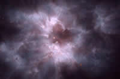 |
Neutron Stars 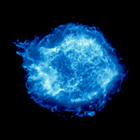 |
Black Holes 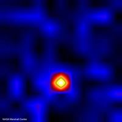 |
||||||||||||||||||||||||||||||||||||||||||||||
White dwarfs are the left over cores of dead solar mass stars. They are comprised mostly of atoms of oxygen and carbon created by the fusion of hydrogen and helium in the stars. The surface temperature of these stars is approximately 20,000°K. This heat is from the left over heat of the fusion processes in the old core. There is no fusion process inside the leftover core. The size of a white dwarf is approximately the same size as the earth with about 100,000x the gravity and 200,000x the density (if the radius is similar to Earth). There is a limit to the mass (1.4 solar masses also called the Chandrasekhar Limit) of a white dwarf before the electron degeneracy pressure is overtaken by gravity which gives us a limit to the size of a star that can create it. |
Neutron stars are the left overs of stars with initial masses estimated to be 8-20 times the mass of the sun. When the star finally supernovas, the left over mass in the core needs to be above the 1.4 solar mass limit of the white dwarf. Instead of being a ball of left over carbon or oxygen atoms, the electrons interact with the protons and form neutrons through the process of electron capture. This in turn creates a massive ball of neutrons with a radius of about 10 Km (6.2 mi) and with a gravitational pull of 1 Trillion times that of Earth on its surface. When the core collapses, the angular velocity of the rotation of the star is conserved in the core. Since the size of the core is decreased dramatically, the rotation of the neutron star is increased immensely. Some are known to spin hundreds of times per second. We have seen this as a result of pulsars such as that in the middle of the Crab Nebula. Pulsars are neutron stars which have conserved the magnetic field within the core which causes a jet of radio energy to be ejected from the neutron star. See the video below to watch the surrounding gas move as a result of the pulsar in the Crab Nebula. There are several forms of neutron stars which include pulsars, magnetars, binary neutron stars, soft gamma repeaters, and anomalous X-ray pulsars. |
Black holes are the left over cores of very massive stars. Stars with an initial mass greater than 8 solar masses will more than likely turn into a black hole at its death. A star will go through similar processes before its death as a neutron star but the mass left over will be great enough to overcome the neutron degeneracy pressure holding a neutron star from collapsing. This occurs with a core mass greater than about 3.2 solar masses. As the pressure increases beyond that holding neutrons apart, one possibility is the neutrons are squeezed tighter to form a ball of quarks. The smallest particle known to science (outside of the string theory of them being made of 1-D strings). Inside the black hole is a region of infinite density where time has theoretically stopped. You can think of this as an absence of space and time. The size of the singularity in the black hole can be calculated using the Schwarzschild Radius formula. Beyond the singularity out to a distance called the event horizon, nothing can escape due to the gravity being so great. Black holes can still grow if given mass to intake. Much of the mass from a star or nebula that comes too close to a black hold may actually be ejected away from the black hole before being sucked in. We can see this happening around super-massive black holes in galaxies with large relativistic jets flowing away from them. Black holes theoretically do not last forever. Theories suggest that they may "evaporate" into space by the release of thermal radiation into space. This is referred to as Hawking Radiation. |
|||||||||||||||||||||||||||||||||||||||||||||||
| Leftovers | Planetary Nebula and Black Dwarfs 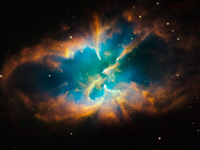 |
Supernova Remnants and Neutron Stars 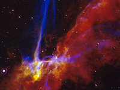 |
Super-massive Black holes 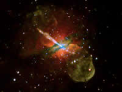 |
The leftover elements are created at different stages and with different processes. To know which was created where, go to the Cosmic Origins website and see what created what and how. |
The leftovers of the release of material forming a white dwarf makes a nebula of gas and dust around the white dwarf called a planetary nebula. This term is incorrect due to the nebula having nothing to do with planets (except for a possibility of it expanding outward past them and affecting them in some manner) and being misidentified by early astronomers. A more correct name for this would be a death star nebula or a ghost star. The material is heated up by its release and also due to the radiation of light interacting with it from the white dwarf. This material will eventually disperse and spread throughout the galaxy combining to make new stars and planets in the galaxy. Black dwarfs are the cold remnants of the white dwarfs. These are only to exist in theory as white dwarfs take tens of billions of years to cool to the point they do not emit light. Since the universe is only 13.7 billion years old, there has not been enough time in the universe for this to happen if the theory of the big bang is correct. |
Supernova remnants are just that, remnants of the supernova. They are the left over materials from the explosion of a star. They contain heavier elements than that of a planetary nebula due to the process that created it. We see the material due to the interaction of it as it expands through existing gas and its own heat leftover from the star. That material will spread throughout the galaxy mixing its material to form new stars and planets. Neutron stars do emit radiation and heat and over time will slow down. Will they ever die out like to become a dead neutron star? It's difficult to say. It may eventually collide with another star, neutron star or black hole and either accrete enough matter, collide with another neutron star or black hole and form another black hole with the combined mass of the two objects. It may float in space until it has stopped spinning and cool off to a point where we cant see it. This would take as long as it does for a white dwarf to turn into a black dwarf. |
Super-massive black holes are the leftovers of billions of stars and matter combined during the collisions of galaxies over the lifetime of the universe. They have many of the same properties as those formed from supernovae of massive stars but their mass lies in the regime of billions of solar masses. These lie in the centers of massive galaxies such as the Milky Way. When they actively intake matter or destroy stars, some of this material is sent away from it in the form of powerful jets of energy seen in radio, X-ray, optical, and gamma ray. It is theorized that most massive galaxies have these super-massive black holes. |
||||||||||||||||||||||||||||||||||||||||||